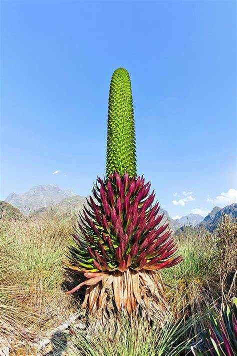
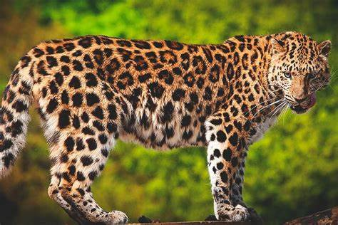
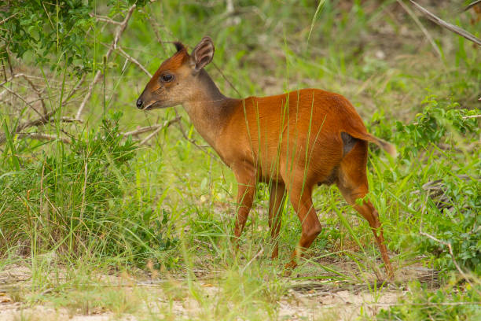

Piante
Senecio Gigante
Nome scientifico: Senecio spp.
Famiglia: Asteraceae
Distribuzione: Le montagne dell'Africa centrale e orientale, come i Monti Rwenzori e il Kilimangiaro.
Alimentazione: Pianta erbacea che cresce in terreni alpini, resistendo a temperature molto basse e venti forti.
Curiosità: Il Senecio gigante è una pianta che cresce molto lentamente, ma può sopravvivere per decenni nelle dure condizioni delle montagne.

Lobelia gigantea
Nome scientifico: Lobelia gigantea
Famiglia: Campanulaceae
Distribuzione: Montagne tropicali, in particolare nel Parco Nazionale Rwenzori.
Alimentazione: Pianta erbacea che cresce in alta montagna, resistente a condizioni climatiche estreme.
Curiosità: La Lobelia gigantea può crescere fino a 3 metri di altezza nelle regioni alpine, producendo bellissimi fiori blu.

Erba tussock
Nome scientifico: Poa spp.
Famiglia: Poaceae
Distribuzione: Montagne ad alta quota, come quelle dei Monti Rwenzori e del Kilimangiaro.
Alimentazione: Pianta erbacea resistente che cresce in terreni montani e soffre di freddo intenso.
Curiosità: L'erba tussock è fondamentale per la stabilizzazione del suolo nelle regioni alpine.

Animali
Leopardo
Nome scientifico: Panthera pardus
Distribuzione: Le zone montuose dell'Africa, come i Monti Rwenzori e il Kilimangiaro.
Alimentazione: Carnivoro, predilige ungulati, scimmie e piccoli mammiferi.
Curiosità: Il leopardo è noto per la sua abilità nell'arrampicarsi sugli alberi e per nascondere le sue prede nei rami per evitare i predatori.

Duiker rosso delle montagne
Nome scientifico: Cephalophus natalensis
Distribuzione: Le montagne dell'Africa centrale, tra cui i Monti Rwenzori.
Alimentazione: Erbivoro, si nutre di foglie, frutti e germogli.
Curiosità: Il duiker rosso è un piccolo antilope che si muove velocemente nelle foreste di montagna.

Scimmia colobo dell’altopiano
Nome scientifico: Colobus vellerosus
Distribuzione: Le regioni montuose dell'Africa centrale, come i Monti Rwenzori.
Alimentazione: Frugivoro, mangia principalmente foglie e frutti.
Curiosità: Il colobo dell'altopiano ha un pelo distintivo e una lunga coda che lo aiuta a bilanciarsi mentre si muove tra gli alberi delle montagne.

Clima
Clima montano: freddo, con forti escursioni termiche. A seconda dell’altitudine, le temperature possono scendere sotto lo zero. Le precipitazioni aumentano con l’altitudine, spesso sotto forma di neve.
Esempi
- Monte Kilimangiaro (Tanzania)
- Monti Rwenzori (Uganda, RD Congo)
- Monte Kenya (Kenya)